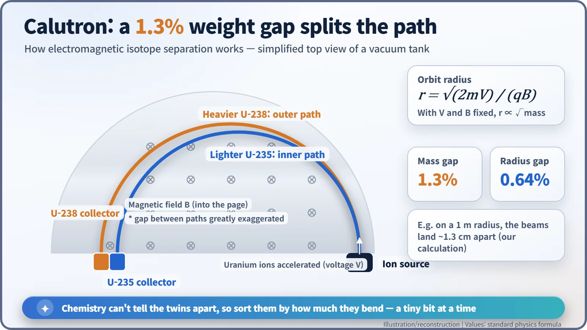
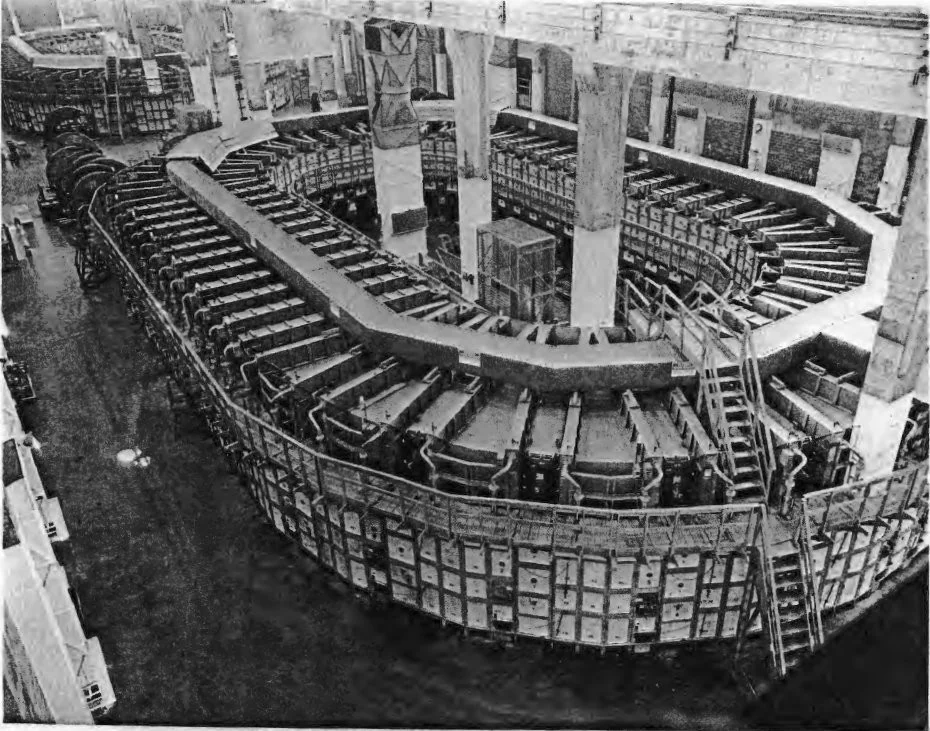
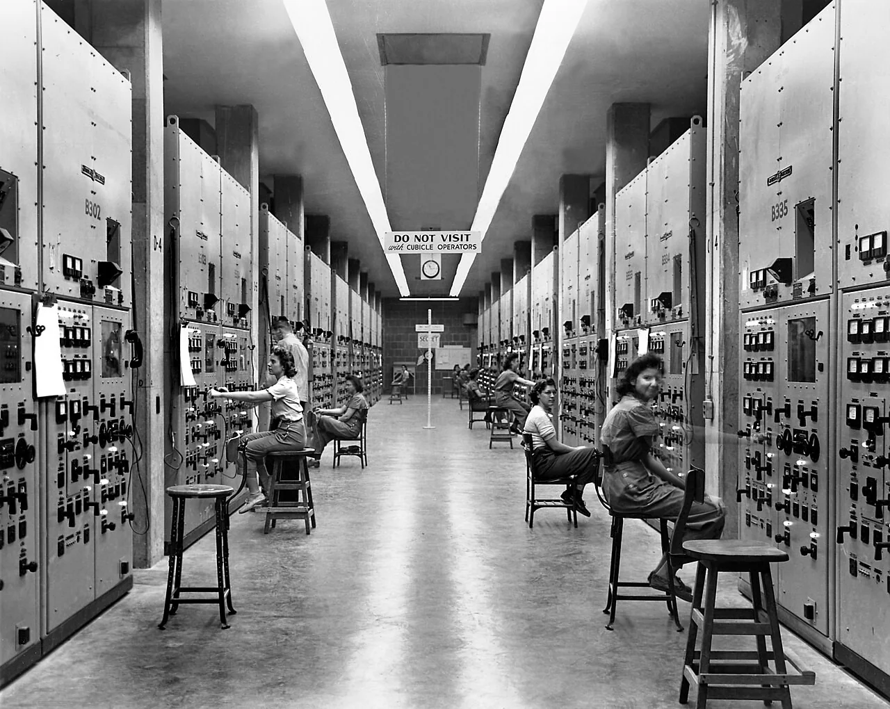
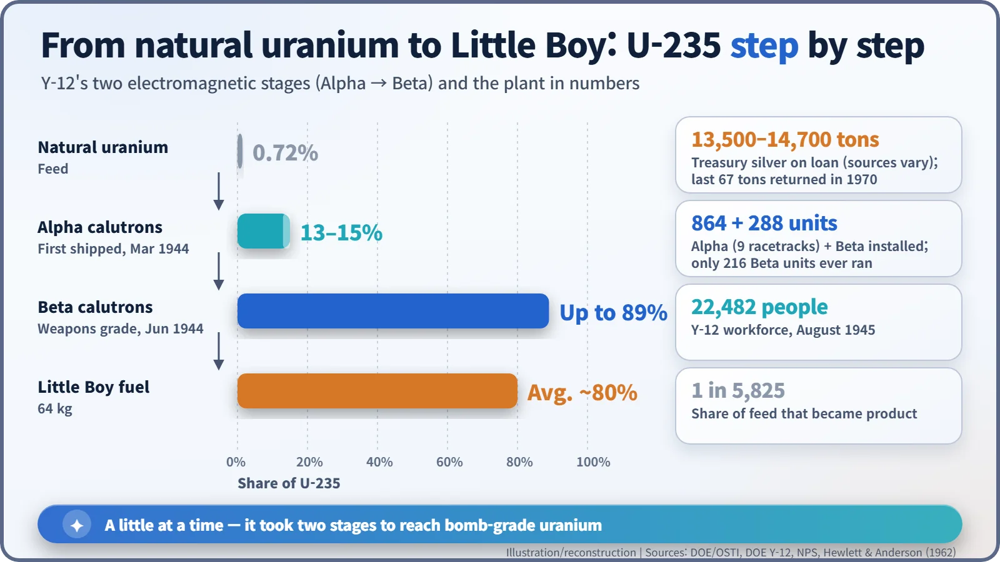
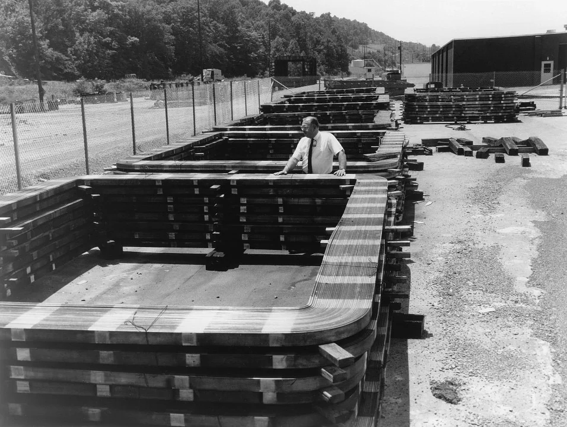

Nuclear History · 102
Magnets Wound with Treasury Silver — Oak Ridge's Y-12 Plant and the Calutron
Chemistry could not tell uranium-235 from uranium-238, so a Tennessee factory sorted them by how much they bent in magnets wound with the nation's silver.
Uranium-235 and uranium-238 are chemically identical, so the Manhattan Project had to sort them by weight. At Y-12 in Oak Ridge, Tennessee, more than a thousand calutrons bent beams of uranium ions in giant magnets wound with silver borrowed from the U.S. Treasury. Operated largely by young local women, the plant produced the enriched uranium that went into Little Boy, and the last of the silver went back to the vault only in 1970.
"The Treasury will always think of silver in troy ounces"
"Young man, you may think of silver in tons, but the Treasury will always think of silver in troy ounces." That is how Kenneth D. Nichols (1907–2000), an Army engineer on the Manhattan Project, later remembered the reply of Under Secretary of the Treasury Daniel W. Bell. Nichols had come to ask to borrow thousands of tons of the nation's silver. Precious metal is weighed in ounces, so a visitor talking in tons must have been a novelty. That silver never became coins. It became the windings of giant magnets in a Tennessee valley. [5]
Twins that chemistry cannot separate
A uranium bomb needed uranium-235. The trouble is that natural uranium contains only 0.72% of it, and the rest, uranium-238, behaves exactly the same way in any chemical reaction. No reagent can pull them apart. The only handle is weight: the two differ in mass by about 1.3%.
In early 1943 only one separation method had actually been proven to work. At Berkeley, Ernest O. Lawrence (1901–1958) had adapted his cyclotron into a device called the calutron, a name taken from "California University Cyclotron". The first one ran on 2 December 1941, using the magnet borrowed from the 37-inch cyclotron. [5]
Same push, different bend
The idea is simple. Strip an electron off uranium atoms, accelerate the resulting ions with a voltage, and send them into a magnetic field. They curve around in a half circle. The radius of that circle grows with the square root of the mass, so heavy uranium-238 swings slightly wider and light uranium-235 slightly tighter. Put two collectors side by side at the end of the half circle, and each isotope piles up in its own pocket.
The difference, though, is tiny. The radii differ by only about 0.64%. On a path with a 1-metre radius, the two beams land roughly 1.3 cm apart (our own calculation, not a measured plant figure). Think of a loaded truck and a small car taking the same bend: the truck drifts a little wider, but here the drift is about the width of a fingertip.

Nine racetracks and a mountain of silver
On 18 February 1943, ground was broken for the Y-12 plant at the Clinton Engineer Works in Oak Ridge, Tennessee. Dozens of calutrons were arranged in an oval and tied into one huge magnet; because the layout looked like a running track, each unit was called a racetrack. The first stage, Alpha, had nine racetracks with 864 calutrons. The second stage, Beta, had 288 installed, of which only 216 ever operated. [1] [5]
Copper for the magnet coils was scarce in wartime, so the project borrowed silver from the federal vault at West Point, New York. Sources give somewhere between about 13,500 and 14,700 tons. [1] [2] [3]

The start was rocky. In November 1943, tests showed the coils shorting out. In December, General Leslie Groves had one magnet opened, and rust and debris were found inside. The magnets were taken apart and rewound, and in January 1944 the second Alpha racetrack began operating. [2] [5]
The "Calutron Girls" at the dials
The thousands of control panels were watched by young local women trained by the operating contractor, Tennessee Eastman. Their job was to keep needles at set marks by turning knobs, and most had no idea what they were making. Nichols recalled that these operators outproduced the Berkeley PhDs, because the scientists could not resist investigating the cause of every small flicker of the dials. By August 1945, Y-12 employed 22,482 people. [3] [5]

The woman at the front right is usually identified as Gladys Owens. According to a story often told, she only understood what her wartime job had been for when she saw this photograph on a public tour some fifty years later. [4]
Two passes to bomb grade
Because each pass separated only a little, uranium coming out of Alpha reached just 13–15% uranium-235. It was run again through Beta, and in June 1944 the first weapons-grade product came out, at up to 89%. By one count, only one part in 5,825 of the feed ended up as finished product. Later, uranium already slightly enriched at the S-50 and K-25 plants was fed in to raise efficiency. [5]
Little Boy, the bomb dropped on Hiroshima in August 1945, held 64 kg of uranium enriched to an average of about 80%, and its final enrichment step was Y-12's Beta calutrons. But the method was power-hungry and was overtaken by the more efficient gaseous diffusion process. The Alpha racetracks shut down in September 1945, and most of Beta followed by the end of 1946. [3] [5]

1970: the last 67 tons go home
Most of the silver went back to the vault after the war. But 67 tons stayed in magnets used to separate isotopes for medical and research work, and they were only returned in 1970, after the coils were replaced with copper. [2]

The building that still holds the original Beta racetracks, Beta 3, is now part of Manhattan Project National Historical Park. The physics fits in one line of a textbook. Turning that line into a factory took the nation's silver and tens of thousands of pairs of hands. [3]